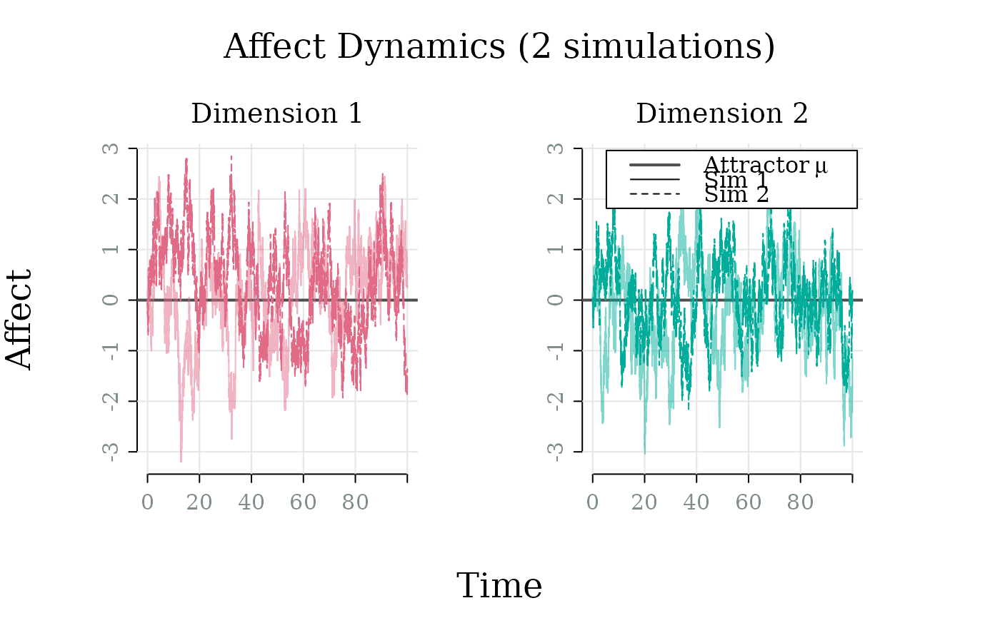

Generates a trajectory from the Ornstein-Uhlenbeck process using Euler-Maruyama discretization. Handles both univariate and multivariate models.
Usage
# S3 method for class 'affectOU'
simulate(
object,
nsim = 1,
seed = NULL,
dt = 0.01,
stop = 100,
save_at = dt,
...
)Arguments
- object
An
affectOUmodel object.- nsim
Number of replications to simulate.
- seed
Random seed for reproducibility.
- dt
Time step for Euler-Maruyama discretization (smaller = more accurate).
- stop
Total simulation time.
- save_at
Time interval at which to save simulated data; used to linearly interpolate results. Useful for reducing output size.
- ...
Additional arguments (unused).
Value
A model object of class simulate_affectOU containing:
- model
The original
affectOUmodel object used for simulation.- data
A 3D array with dimensions (time x ndim x nsim) containing the simulated trajectories.
- times
A vector of time points corresponding to the rows of the
dataarray.- nsim
The number of simulations performed.
- dt
The time step used for the Euler-Maruyama discretization.
- stop
The total simulation time.
- save_at
The time interval at which simulated data was saved.
- seed
The random seed used for simulation (if any).
Examples
model <- affectOU(ndim = 2)
sim <- simulate(model, nsim = 2)
plot(sim)

summary(sim)
#>
#> ── 2D Ornstein-Uhlenbeck Simulation Summary (2 replications) ───────────────────
#>
#> ── Simulation settings ──
#>
#> Time: 0 → 100.000
#> Time points: 10001; dt: 0.01; save_at: 0.01
#>
#> ── Comparison to theoretical distribution ──
#>
#> Mean:
#> dim1 dim2
#> Simulated -0.068 0.186
#> Theoretical 0.000 0.000
#>
#> SD:
#> dim1 dim2
#> Simulated 0.952 0.878
#> Theoretical 1.000 1.000
#>
#> Covariance (simulated):
#> [,1] [,2]
#> [1,] 0.906 -0.056
#> [2,] -0.056 0.772
#>
#> Covariance (theoretical):
#> [,1] [,2]
#> [1,] 1 0
#> [2,] 0 1
#>
#> Correlation (simulated):
#> [,1] [,2]
#> [1,] 1.000 -0.067
#> [2,] -0.067 1.000
#>
#> Correlation (theoretical):
#> [,1] [,2]
#> [1,] 1 0
#> [2,] 0 1
head(sim)
#> time dim sim value
#> 1 0.00 1 1 0.00000000
#> 2 0.01 1 1 -0.06688561
#> 3 0.02 1 1 -0.01439262
#> 4 0.03 1 1 0.01589790
#> 5 0.04 1 1 0.12343404
#> 6 0.05 1 1 0.14706889